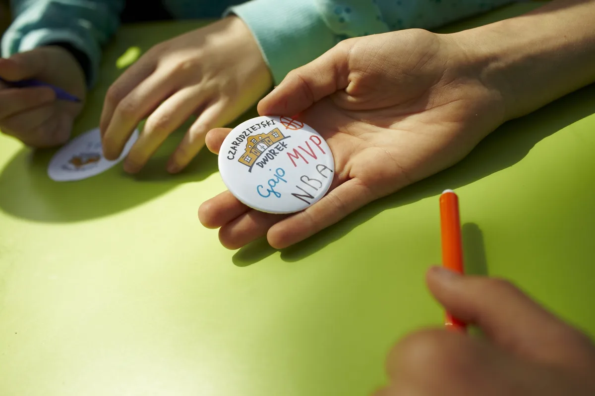
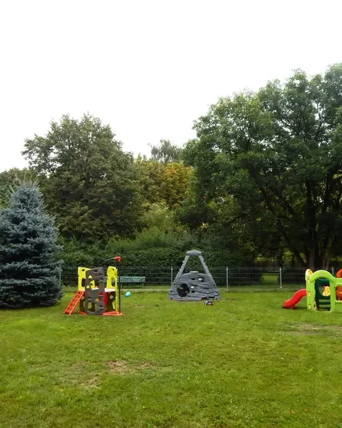

O nas
Poznaj naszą historię i filozofię — od 2003 roku tworzymy miejsce, w którym dzieci rozwijają się w atmosferze ciepła, bezpieczeństwa i profesjonalnej opieki.

Historia
Od 2003 roku
Przedszkole zostało założone we wrześniu 2003 r. Jesteśmy wpisani do ewidencji szkół i placówek niepublicznych pod nr 111/PN.
„Czarodziejski Dworek" to wyjątkowe przedszkole, w którym odkryte i docenione zostaną mocne strony Twojego dziecka. Naszym celem jest dbanie o jego wszechstronny rozwój, zaszczepienie w nim pasji twórczych, rozwijanie zdolności i wspomaganie harmonijnego rozwoju.
Jesteśmy przedszkolem integracyjnym — od ponad dwóch dekad łączymy edukację z terapią, otaczając każde dziecko opieką specjalistów w kameralnych grupach do 14 osób.

Filozofia
Wszechstronny rozwój
W „Czarodziejskim Dworku" każda zabawa jest nauką, a każda nauka jest zabawą. Rozbudzamy w naszych przedszkolakach ciekawość poznawczą, odkrywamy i rozwijamy ich zdolności artystyczne, muzyczne i językowe. Stwarzamy warunki do rozwoju wyobraźni, fantazji, ekspresji plastycznej i ruchowej. Wspomagamy indywidualny rozwój dzieci uwzględniając potrzeby i możliwości każdego z nich. Podwyższamy ich samoocenę i poczucie własnej wartości.
Ciekawość poznawcza
Rozbudzamy radość z odkrywania
Zdolności artystyczne
Muzyka, plastyka, ruch, ekspresja
Indywidualny rozwój
Uwzględniamy potrzeby każdego dziecka

Organizacja
Jak pracujemy
Godziny pracy dostosowujemy do potrzeb rodziców. Pracujemy w godz. od 7:00 do 18:00.
- Godziny: 7:00–18:00, poniedziałek–piątek
- Małe grupy: do 14 dzieci, 2 nauczycieli w każdej
- Zdrowe jedzenie: uwzględniamy wszystkie diety
- Bezpieczny teren: ogrodzony, z własnym parkingiem
Dlaczego my
Co nas wyróżnia
Małe grupy
Do 14 dzieci, a w każdej 2 nauczycieli.
Przestronne sale
Przestronne sale edukacyjne z zapleczem sanitarnym.
Wykwalifikowana kadra
Wszyscy specjaliści „na miejscu" i do dyspozycji dzieci i rodziców.
Zdrowe jedzenie
Uwzględniamy wszystkie diety.
Plac zabaw
Duży, ogrodzony plac zabaw.
Bezpieczny teren
Ogrodzony teren z własnym parkingiem.
Zajęcia w czesnym
Nieodpłatne zajęcia terapeutyczne, językowe, nauka pływania, warsztaty.
Wsparcie rodziców
Konsultacje specjalistyczne, warsztaty i szkolenia.
Nasze liczby
Rekomendacje rodziców
Przedszkole ze wspaniałą kadrą, wręcz rodzinną atmosferą i które mogę polecić każdemu. Nie wyobrażam sobie nawet lepszego miejsca.
Super przedszkole z indywidualnym podejściem do każdego dziecka.
Zadowolenie z kadry, atmosfery, małych grup i różnorodnych zajęć.
Widoczna poprawa w rozwoju emocjonalnym i intelektualnym dziecka.

Czarodziejski Uniwersytet
Szkolenia, porady, ciekawostki
Nasz Uniwersytet to przestrzeń wiedzy dla rodziców — warsztaty, konsultacje specjalistyczne i materiały wspierające rozwój Twojego dziecka.
Odwiedź UniwersytetZapraszamy
Zapisz dziecko do Czarodziejskiego Dworku
ul. Górczewska 89, 01-401 Warszawa · 7:00–18:00
690 629 501 / 510 318 948